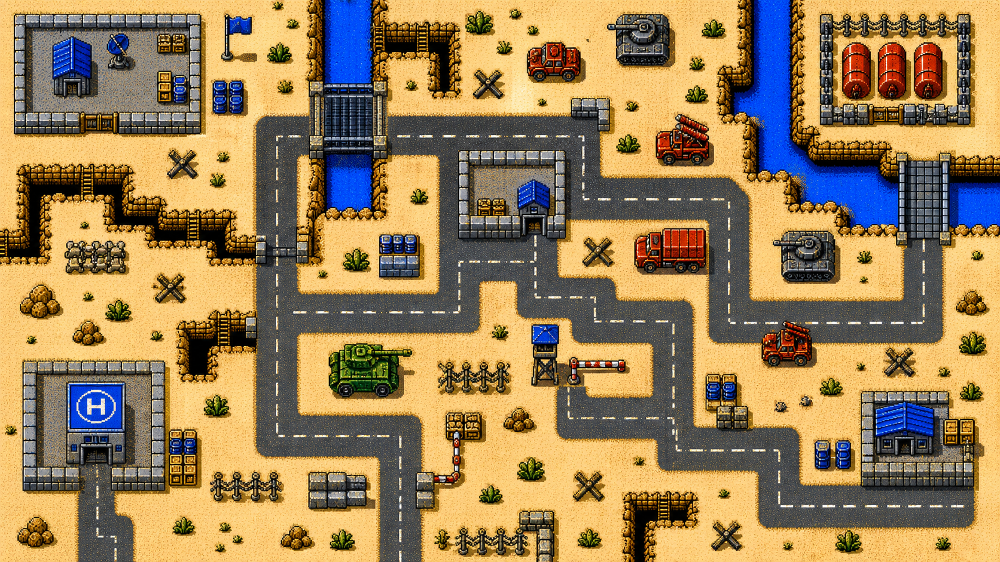
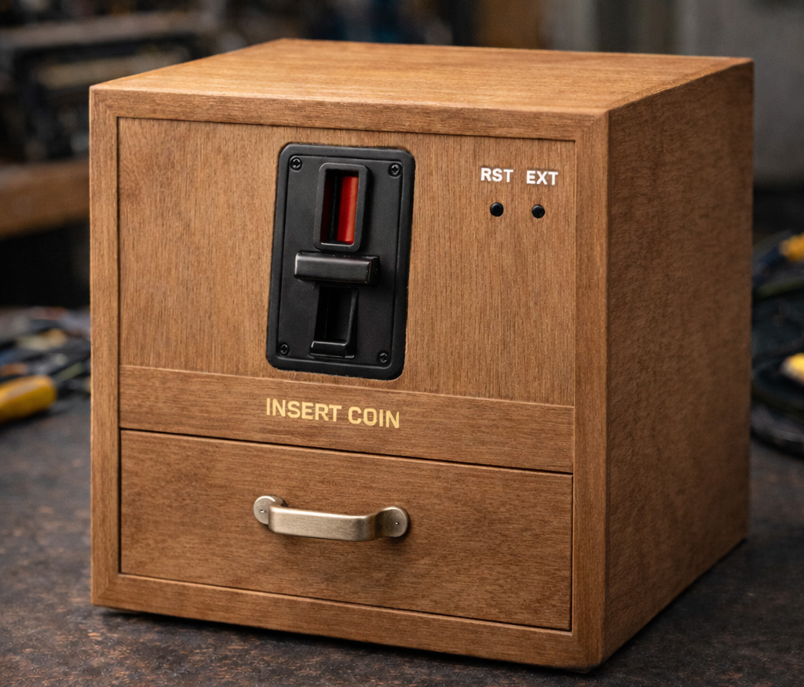

Project One
A brief description of this game or project — genre, platform, your role.
Slot / MobileGame Maker
Crafting worlds, one frame at a time.

A brief description of this game or project — genre, platform, your role.
Slot / Mobile
A minimalist coin-operated arcade device that turns every play into a tactile, retro experience.
Arcade / Desktop{{ post.date | date: "%B %d, %Y" }}
{{ post.excerpt | strip_html | truncatewords: 25 }}
{% endfor %}I'm ShaoYun — a game maker exploring the intersection of gameplay, atmosphere, and cinematic storytelling. With a background in software engineering and visual production, I approach games as crafted experiences — where systems, timing, sound, and image work together to shape how a moment feels. I'm especially drawn to the spirit of 90s games — their clarity, challenge, and immediacy. My work aims to revisit that era, not by imitation, but by reinterpreting its core energy for today's players.